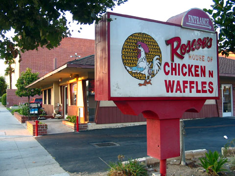

Dinning
Gourmet thats affordable.
In -N- Out
In-N-Out Burgers, Inc. is a regional chain of fast food restaurants with locations in the American Southwest. Founded in Baldwin Park, California, in 1948 by Harry Snyder and his wife Esther Snyder

Roscoe's House of Chicken and Waffles
Roscoe's House of Chicken and Waffles is a Hollywood, California-based soul food restaurant chain founded by Herb Hudson, a Harlem native, in 1975. Fried chicken and waffles are our specialty! No one knows chicken like we do! But chicken and waffles are only part of our story. We are also famous for our delicious greens, Mac and Cheese, hot water cornbread, and red beans and rice.
